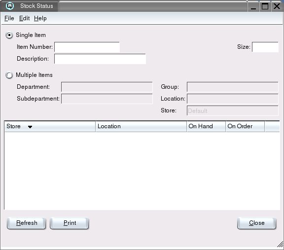

Stock Status

The stock status report shows the on hand and on order quantities for
an item by store.
Single Item
Toggle on single item to define the item and size to view.
-
- Item Number - Enter the item number to view.
- Description - The description of the item.
- Size - Select the size of the item to view. Note - the
recomended selection for items that are purchased in one size and sold
in another is "All Sizes". Quasar combines purchases, sales and
adjustments of all sizes to arrive at the stock on hand.
Multiple Items
Toggle on multiple items to define multiple items to view.
-
- Department - Enter the department to view.
- Subdepartment - Enter the subdepartment to view.
- Group - Enter the group to view.
- Location - Enter the location to view.
- Store - Enter the store to view.
Data Format
Select the data format to view the data.
-
- Quantity Size - Select the size format in which you wish
to view the stock status. For example, if an item has two sizes (a
case of 12 and a single) and you have 24 single units on hand. If you
select "Case" as the display format the table will show a quantity of
"2" on hand. If you choose to view the data in single units then the
display table will show a quantity of "24" on hand.
Display Table
-
- Store - The store containing the stock.
- Location - The stocking location of the item in the store.
- Stocked - Displays whether or not an item is stocked.
- On Hand - The on hand quantity for the store.
- On Order - The on order quantity for the store.
Refresh
Clicking on refresh will refresh the data on the screen to match
the current selection criteria.